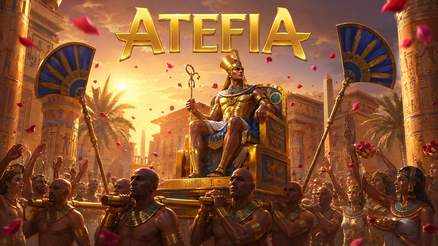
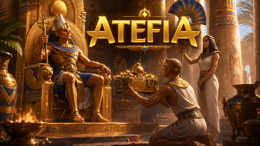
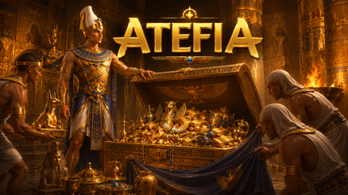

Casino Welcome Bonus
100% up to €500 + 200 FS

Sport Welcome Bonus
100% up to €100

Tournaments
Daily prizes

VIP Free bet Daily
50% up to €500


Table of Contents

Jak Wygląda Katalog Gier W 2026
Wyobraź sobie, że masz tylko dziesięć minut między obowiązkami i chcesz jednego prostego celu: znaleźć rozrywkę bez przekopywania się przez setki kafelków. Otwierasz lobby, widzisz kategorie, przewijasz chwilę i czujesz, że łatwo wpaść w tryb losowego klikania. To normalne - dlatego w 2026 wygrywa nie “najwięcej opcji”, tylko szybka orientacja.
Zacznij od porządku, nie od emocji. Wybierz jedną kategorię na sesję, zanim w ogóle zobaczysz miniaturki. W praktyce działa prosta zasada: jedna kategoria, jeden filtr, jedna decyzja na start. Jeśli od razu skaczesz między różnymi typami rozgrywek, twój mózg zaczyna gonić bodźce, a nie plan.
Jeśli grasz na telefonie, ryzyko rośnie. Wyobraź sobie, że jedną ręką trzymasz kubek, drugą przewijasz, a ekran podświetla się od powiadomień. W takim układzie najczęściej zdarzają się dwa problemy: przypadkowe uruchomienia i pośpiech przy stawce. Najlepsza obrona to spowolnienie pierwszych kroków - oglądasz, czytasz, dopiero potem startujesz.
Warto też myśleć o sesjach jak o blokach. Krótki blok to bezpieczniejszy blok. Wyobraź sobie, że mówisz sobie “tylko chwilę”, a potem mija godzina, bo nie było żadnego naturalnego końca. Ustaw timer, nawet jeśli brzmi to śmiesznie. Timer nie psuje zabawy, tylko chroni przed autopilotem.
Zwróć uwagę na informacje przed uruchomieniem rozgrywki. W 2026 wielu graczy odpala grę, a dopiero potem próbuje zrozumieć zasady i minimalną stawkę. To odwrócona kolejność. Lepiej najpierw zobaczyć, jak wygląda bet size, jak działa potwierdzenie, gdzie jest historia, a dopiero potem wchodzić w akcję.
Na koniec mały trik: lista ulubionych. Wyobraź sobie, że wracasz po tygodniu i zamiast przewijać od zera, w dwie minuty masz swoje sprawdzone pozycje. Mniej szukania oznacza mniej przypadków. A mniej przypadków to spokojniejsza gra.

Atefia Ruletka: Jak Grać Bez Pośpiechu
Wyobraź sobie wieczór po pracy: chcesz czegoś “stołowego”, ale bez uczenia się skomplikowanych zasad. Włączasz ruletkę online i nagle czujesz presję tempa - okno na zakład, krótka pauza, wynik, następna runda. To nie jest trudne, ale łatwo dać się ponieść rytmowi.
Najpierw złap tempo bez stawiania. Obejrzyj jedną rundę jak widz: gdzie pojawia się czas, gdzie widać żetony, jak wygląda potwierdzenie. Dopiero potem wejdź z małą stawką i z jedną prostą regułą: nie zmieniasz stawki przez kilka rund. Stała stawka jest jak barierka - trzyma cię w planie, gdy emocje próbują cię wypchnąć.
W 2026 kluczowe jest to, jak reagujesz na serię wyników. Wyobraź sobie, że patrzysz na historię i czujesz, że “coś się powtarza”. Wtedy pojawia się pokusa gonitwy. Zamiast gonitwy, zrób pauzę i sprawdź budżet sesji. Jeśli budżet jest naruszony, kończysz, nawet gdy “kusi”.
Stawki, Zakłady I Jeden Spokojny Rytuał
Wyobraź sobie, że zostały trzy sekundy do zamknięcia zakładów i ręka przyspiesza. Klikasz raz, potem drugi, bo nie jesteś pewien, czy weszło. Właśnie tak powstają nerwy i przypadkowe decyzje.
Zamiast tego użyj rytuału jednego kliknięcia: wybierasz zakład, potwierdzasz, patrzysz na podsumowanie i dopiero wtedy przechodzisz dalej. Jeśli coś się zawiesi, nie “naprawiaj” tego spamowaniem przycisków. Najpierw sprawdź historię aktywności, potem działaj. Ten nawyk oszczędza więcej pieniędzy niż jakakolwiek magiczna teoria.
Błędy Mobilne I Jak Ich Unikać
Wyobraź sobie, że grasz na telefonie w słabym zasięgu, a ekran na chwilę przymula. Masz odruch kliknąć drugi raz. I nagle nie wiesz, co zostało przyjęte, a co nie.
W praktyce mobilna zasada jest prosta: unikaj ostatnich sekund, gdy sieć jest niestabilna. Jeżeli czujesz pośpiech, odpuść rundę. Odpuścić rundę jest normalne, szczególnie gdy grasz w biegu, w kolejce albo w hałasie. W 2026 kontrola wygrywa z szybkością.
Atefia Blackjack: Decyzje, Które Mają Sens
Wyobraź sobie, że siadasz do stołu i chcesz “grać z głową”, ale po kilku rozdaniach zaczynasz reagować emocjami. Blackjack ma tę właściwość, że decyzje wydają się bardzo osobiste, a przez to łatwo wpaść w pułapkę “odrabiania nastroju”.

Zacznij nudno i bez ambicji. Obejrzyj jedno rozdanie bez stawki, potem zagraj serię z jedną stałą stawką. Dopiero po tym bloku oceń, czy w ogóle chcesz kontynuować. Jeśli już na starcie czujesz napięcie, przerwa jest lepszym ruchem niż “jeszcze jedna ręka”.
W 2026 warto dopasować grę do warunków, nie odwrotnie. Wyobraź sobie, że grasz mobilnie, a telefon drga od powiadomień. To nie jest idealny moment na zbyt dużo decyzji. Krótszy blok, mniejsza stawka, mniej rozproszeń - dzięki temu decyzje są czystsze.
Plan Na Pierwsze Dwadzieścia Rozdań
Wyobraź sobie, że ktoś mówi: “zagrajmy szybko”, a ty czujesz presję. Zamiast przyspieszać, zrób plan: pięć rozdań obserwacji, dziesięć rozdań ze stałą stawką, potem przerwa i ocena nastroju. Ten schemat brzmi przyziemnie, ale działa, bo kończy sesję zanim zacznie się gonitwa.
Po przerwie zadaj sobie jedno pytanie: czy decyzje wynikają z zasad, czy z emocji. Jeśli w głowie pojawia się “muszę to odkręcić”, to znak, że pora zakończyć blok. Dorośli gracze najczęściej wygrywają tym, że potrafią się zatrzymać, a nie tym, że “wytrzymali” dłużej.
Atefia Live Casino: Co Sprawdzić Przed Wejściem
Wyobraź sobie, że włączasz transmisję z krupierem, słyszysz dźwięk kart i od razu chcesz dołączyć. Interfejs miga, czas leci, a ty czujesz presję, że musisz “zdążyć”. Właśnie w tej minucie najłatwiej o błędy, bo tempo jest szybsze niż twoja orientacja.

Najlepsze wejście jest spokojne: najpierw obserwujesz, potem grasz. Zobacz, gdzie jest przycisk stawki, gdzie potwierdzenie, gdzie historia. Upewnij się, że wiesz, jak wyjść ze stołu bez nerwów. Dopiero wtedy stawiasz pierwszy zakład i robisz to małą stawką.
W 2026 sesje na żywo potrafią “zjadać czas”. Wyobraź sobie, że mówisz “tylko chwilę”, a po chwili mija czterdzieści minut. Timer jest prostym hamulcem. Ustawiasz go przed wejściem i traktujesz jak zasadę, nie sugestię.
Tempo Stołu I Odczyt Interfejsu
Wyobraź sobie, że wchodzisz na stół w środku rundy. Widzisz ruch, widzisz komunikaty i nie masz pojęcia, gdzie teraz jest okno na zakład. Zamiast zgadywać, poczekaj jedną rundę i dopiero wtedy dołącz.
Działa tu prosta zasada: najpierw rozumiesz ekran, potem klikasz. Jeśli nie jesteś pewien, czy zakład został przyjęty, nie rób tego “jeszcze raz”. Sprawdź historię aktywności, zobacz status i dopiero wtedy podejmij kolejną decyzję. Ten spokój jest kluczowy.
Czat, Dźwięk I Skupienie
Wyobraź sobie, że próbujesz jednocześnie czytać czat, oglądać stół i podejmować decyzje. Po chwili czujesz chaos, a chaos sprzyja przypadkom. Jeśli czat cię rozprasza, ignoruj go. Nie musisz być społeczny, żeby gra była udana.
Podobnie z dźwiękiem. Dla jednych pomaga, dla innych podkręca emocje. W 2026 warto wybrać ustawienie, które obniża napięcie, a nie je buduje. Gdy napięcie rośnie, stawki rosną razem z nim.
Przerwy, Timery I Narzędzia Kontroli
Wyobraź sobie, że czujesz “jeszcze jedna runda” mimo zmęczenia. To moment, kiedy narzędzia odpowiedzialnej gry mają sens. Krótki timeout potrafi uciąć spiralę, zanim zacznie się gonitwa.
Ustal proste ramy: limit czasu, limit budżetu i przerwa po określonej liczbie rund. Te ramy powinny działać zawsze, niezależnie od tego, czy akurat wygrywasz, czy przegrywasz. Właśnie na tym polega kontrola w 2026 - na przewidywalności.
Atefia Kasyno Na Żywo: Atmosfera I Bezpieczeństwo
Wyobraź sobie, że szukasz atmosfery kasyna, ale chcesz ją mieć pod kontrolą. Tryb z krupierem na żywo daje klimat, tylko że klimat potrafi pociągnąć za sobą pośpiech. Najlepsze, co możesz zrobić, to potraktować tę rozgrywkę jak krótkie spotkanie, nie jak serial bez końca.

Zacznij od ustalenia celu sesji. Czy to ma być relaks, test stołu, czy kilka spokojnych rund? Wyobraź sobie, że nie masz celu i tylko “jesteś w środku”. Wtedy aplikacja sama ustawia ci rytm, a ty zaczynasz klikać, żeby nadążyć. Cel działa jak kierownica.
Poniższa tabela pomaga szybko dopasować tryb do nastroju i warunków, bez obiecywania cudów. To po prostu mapa wyboru dla dorosłych użytkowników.
Tryb Rozgrywki | Kiedy Najlepiej Pasuje | Co Ustawić Przed Startem | Typowy Błąd | Lepszy Nawyk |
Gry Bębnowe | Krótka sesja, proste kliknięcia | Timer i stała stawka | Skakanie po tytułach bez planu | Jedna kategoria na sesję |
Gry Stołowe | Gdy chcesz wolniejszego rytmu | Stała stawka na blok rund | Podbijanie stawki po emocjach | Przerwa po serii rozdań |
Krupier Na Żywo | Gdy liczy się klimat i tempo stołu | Limit czasu i wyciszenie rozpraszaczy | Wejście w połowie rundy | Jedna runda obserwacji |
Rozgrywka Z Pulą | Gdy traktujesz to jako dodatek | Mini-budżet na próby | Gonitwa “bo może teraz” | Limit prób i koniec |
Gra Mobilna | Gdy grasz w biegu lub na przerwie | Stabilna sieć i proste wybory | Klikanie w ostatniej sekundzie | Sprawdzenie historii zamiast ponawiania |
Wyobraź sobie, że grasz na żywo i nagle czujesz, że tempo cię pcha. Wtedy wracasz do tabeli w głowie: który tryb jest dziś dla mnie, a który jest dla mnie jutro? Ten krótki reset często wystarcza, żeby sesja została rozrywką, a nie walką z własnym impulsem.
FAQ
Najlepiej zacząć od jednego celu i jednej kategorii, zamiast testować wszystko naraz. Wyobraź sobie, że wchodzisz do sklepu bez listy - bierzesz przypadkowe rzeczy i dopiero potem myślisz, czy były potrzebne. Tu działa to samo: wybierz jedną kategorię, ustaw proste filtry, sprawdź minimalną stawkę i dopiero wtedy startuj, żeby uniknąć impulsów.
Ogranicz liczbę decyzji w jednej sesji: stała stawka, timer i krótkie bloki, szczególnie gdy jesteś w ruchu lub masz słaby zasięg. Wyobraź sobie, że ekran na chwilę przytnie i ty klikniesz drugi raz, bo nie jesteś pewien - właśnie tak powstają duble i nerwy. Pomaga nawyk sprawdzania historii aktywności zamiast ponawiania akcji w ciemno.
Wtedy, gdy pojawia się pośpiech, irytacja albo myśl “odrobię to teraz”. Wyobraź sobie, że przestajesz cieszyć się rozgrywką, a mimo to klikasz dalej - to znak, że steruje tobą nastrój, nie plan. Przerwa działa najlepiej wcześnie, zanim emocje rozkręcą spiralę, dlatego warto traktować ją jak normalną część sesji.
Najpierw obejrzyj jedną rundę bez stawiania, sprawdź tempo, miejsce potwierdzeń i sposób wyjścia ze stołu. Wyobraź sobie, że dołączasz od razu i próbujesz “nadążyć”, a ręka robi się szybsza niż głowa - wtedy łatwo o pomyłkę. Obserwacja, stała stawka i krótki blok czasu to najprostsza recepta na spokojny start.
Bo uczysz się procesu bez presji i wiesz, gdzie są potwierdzenia, statusy i historia transakcji. Wyobraź sobie, że pierwszy raz wypłacasz dopiero po dłuższej sesji i nagle pojawia się komunikat, którego nie rozumiesz - stres rośnie, a decyzje robią się chaotyczne. Mały test daje ci mapę i zmniejsza ryzyko nerwowych ruchów później.
Ustal osobny mini-budżet i limit prób, a potem trzymaj się go bez negocjacji w trakcie. Wyobraź sobie, że mówisz “jeszcze kilka razy”, a czas i stawki zaczynają rosnąć, bo rośnie nadzieja. Limit prób domyka temat, a przerwa po zakończeniu limitu chroni przed impulsywnym dokładaniem środków.
Napisz krótko i rzeczowo: co się stało, kiedy, na jakim urządzeniu i jakie kroki już wykonałeś. Wyobraź sobie, że wysyłasz wiadomość “nie działa” - wtedy dostajesz serię pytań i wszystko się wydłuża. Gdy podasz fakty od razu, obsługa zwykle odpowiada checklistą i szybciej prowadzi cię do rozwiązania.